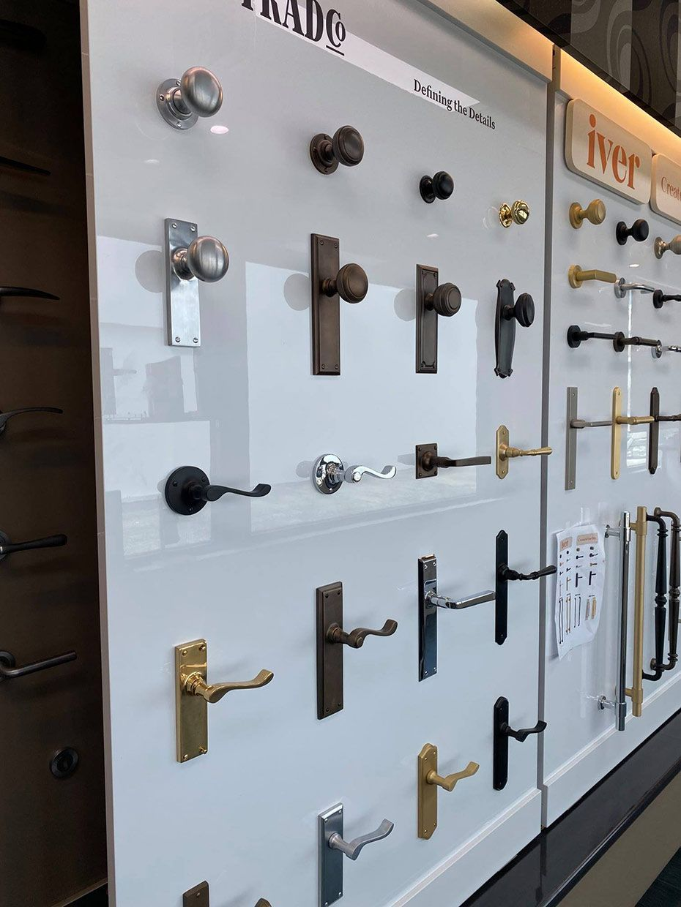
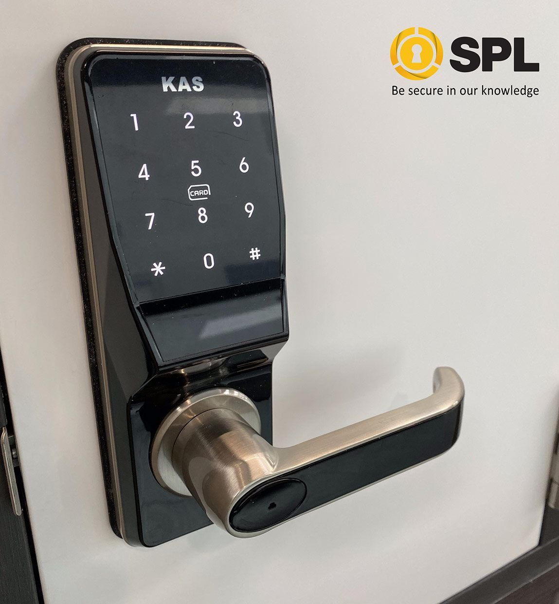

On this page
AT A GLANCE
At SPL Security Solutions, we provide expert locksmith services tailored to the unique needs of Paradise Point.
Get A Free Quote Now!
Thank you for contacting SPL Security Solutions.
We will be in touch soon.

Locksmith Services Paradise Point
At SPL Security Solutions, we provide expert locksmith services tailored to the unique needs of Paradise Point. Whether you need assistance securing your home, business or vehicle our team is equipped with the latest tools and techniques to deliver high-quality solutions.
For homeowners, we specialise in rekeying, smart lock upgrades and the installation of safes to safeguard your valuables. Businesses can rely on our customised security solutions, including restricted key systems, access control setups and CCTV installation. Furthermore, we provide vehicle owners with a wide range of automotive locksmith services, such as transponder key programming, ignition repairs and emergency lockout assistance.
For professional locksmith services in Paradise Point, call (07) 5588 8111 today.
Our residential locksmith services in Paradise Point are designed to enhance your home’s security. From lock repairs and replacements to advanced smart lock installations, we ensure your property and loved ones are safe.
Our commercial locksmith services in Paradise Point include tailored solutions such as master key systems, high-security locks and access control integration. We help businesses protect their assets while streamlining access management.
Our automotive locksmith services in Paradise Point provide fast and reliable assistance for lockouts, lost keys and ignition problems. We offer transponder programming, fob replacements and repairs for a wide range of vehicles.
Our restricted key systems in Paradise Point prevent unauthorised duplication and enhance access control. These systems are ideal for sensitive areas, offering peace of mind for both residential and commercial properties.
Keep your belongings secure with our range of safes in Paradise Point. We provide installation, unlocking and maintenance services for wall safes, floor safes and deposit safes, ensuring tailored solutions for your storage needs.
Our security systems in Paradise Point combine CCTV cameras, alarms and motion sensors for comprehensive protection. These systems are customised to your property, providing advanced monitoring and control options.
Our lock hardware solutions in Paradise Point include durable deadbolts, tamper-resistant locks and innovative smart lock options. Each lock is installed to enhance your property’s security and functionality.
Upgrade your doors with premium door hardware in Paradise Point. We offer high-quality hinges, handles and closers, designed for durability and style to complement any property.
Our selection includes fire-resistant door hardware, sleek closers, and stylish handles, ensuring both practicality and aesthetics for contemporary and classic spaces in Paradise Point.
24/7 Emergency Locksmith Services Paradise Point
At SPL Security Solutions, we offer dependable 24/7 emergency locksmith services in Paradise Point, ensuring help is available whenever you need it. Whether you’re locked out of your home, car or business; or require urgent lock repairs; we’re ready to assist!
Our mobile locksmiths are equipped to handle a variety of challenges on-site, from rekeying locks to replacing damaged hardware. Trust in our team to respond quickly and professionally, around the clock, to restore your access, security and peace of mind.

Contact Details
24/7 Emergency Locksmiths or Security Tech


Trading Hours
Retail Shop

Frequently Asked Questions
-
What are the advantages of using keyless entry systems?
Keyless entry systems offer convenience and enhanced security by eliminating the need for traditional keys. They often feature PIN codes, biometric access, or smartphone integration, making it easier to manage access and reducing the risk of lost or stolen keys.
-
How can I improve the security of my sliding doors?
Sliding doors can be secured with specialised locks, such as double-bolt locks or auxiliary locks designed for sliding mechanisms. Additionally, installing a security bar or track stopper can prevent the door from being forced open, providing an added layer of protection.
Locksmith & Security Solutions Gold Coast, Brisbane & Northern NSW